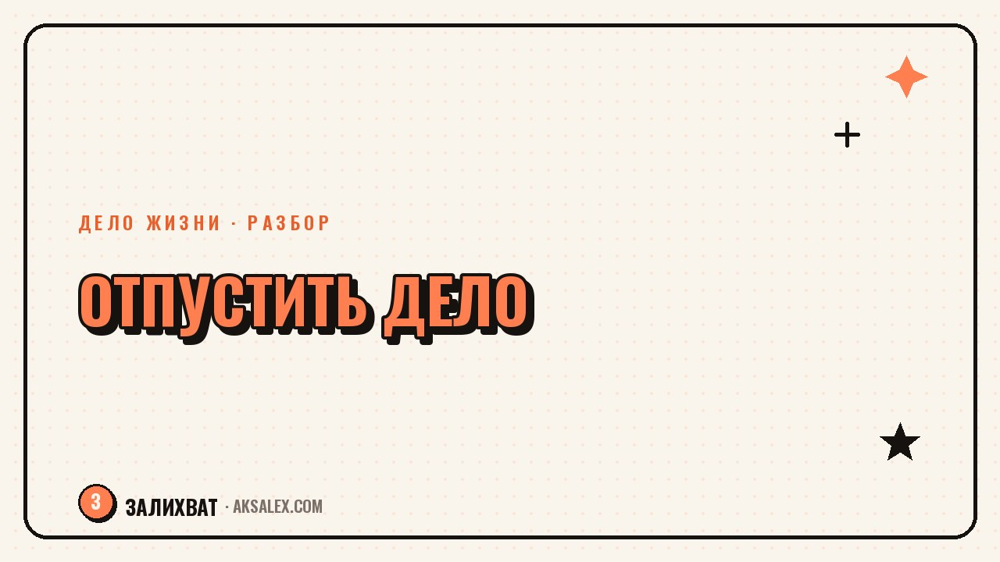

Как отпустить прежнюю профессию, уходя в своё дело

Ты вроде уже решила уйти в своё дело, но прежняя профессия не отпускает: диплом на стене, разговоры "а ты же врач / учитель / инженер", внутреннее ощущение, что бросаешь что-то важное. Это не слабость и не неблагодарность по отношению к годам учёбы. Отпустить старую профессиональную роль - отдельная работа, и она идёт не быстрее, чем само решение уйти. Разберём, почему это так трудно и что реально помогает попрощаться со старой ролью, не разрушая себя чувством вины.
Почему профессия - это больше чем работа
Профессия, в которую ты вложила годы, становится частью того, как ты сама себя описываешь. Когда на вопрос "кто ты" первым делом хочется ответить названием должности, а не именем или интересами, расставание с ней ощущается как потеря части личности, а не смена места работы.
Добавляется и внешнее давление: родители гордились именно этой профессией, коллеги узнают тебя по ней, в разговорах с новыми людьми она давно служит удобным ярлыком. Отпускать приходится не только дело, но и привычный способ быть понятной другим людям с первой фразы.
Три слоя, которые на самом деле прощаются
- Навыки и статус - то, что ты умела и сколько это стоило в глазах других
- Идентичность - привычный ответ на вопрос "кто ты"
- Отношения - коллеги и среда, которые знали тебя именно в этой роли
Откуда чувство, что ты предаёшь прежнее дело
Чувство вины часто приходит не из факта смены профессии, а из сравнения с теми, кто остался. Если бывшие коллеги продолжают работать и у них всё получается, легко решить, что твой уход - это слабость, а не выбор другого пути. На деле это два разных решения в похожих условиях, и ни одно из них не делает другое неправильным.
Я проработала инженером семь лет и ушла в керамику. Полгода мне казалось, что я предаю всех, кто учил меня профессии. Потом поняла: я не предаю инженерное дело, я перестала быть на него похожа. Это не измена, это рост в другую сторону.
Полезно отдельно признать: годы в прежней профессии не обесцениваются из-за ухода. Навык системно думать, доводить дело до конца, работать с людьми - всё это осталось с тобой и перешло в новое дело, даже если внешне оно выглядит совсем иначе.
Что делать с чужим мнением о смене пути
Разговоры "ты столько лет учился, а теперь всё бросаешь" почти неизбежны, и спорить с каждым из них - истощающая задача. Полезнее заранее решить для себя короткий и честный ответ, который не требует оправданий: "я благодарна этому опыту, но дальше иду в другую сторону". Такая фраза закрывает тему без долгого объяснения и без защитной позиции.
Отдельно стоит разделить два источника давления: тревогу близких за твою стабильность и собственное ощущение, будто ты обязана оправдывать чьи-то ожидания. С первым можно работать через честный разговор о планах и деньгах. Со вторым - только через внутреннее решение, что твоя жизнь не обязана быть продолжением чужого сценария.
Что обычно не работает
- Доказывать правильность решения через быстрый успех в новом деле - это добавляет давления, а не снимает его
- Избегать разговоров с близкими вовсе - тревога за тебя от этого только растёт
- Резко обрывать связи со старой профессиональной средой - это не ускоряет расставание, а только делает его болезненнее
Как устроить себе прощание с прежней ролью
Расставание с профессией редко случается одним моментом - обычно это серия мелких прощаний: последний рабочий день, разговор с наставником, момент, когда перестаёшь обновлять резюме по старой специальности. Если этим моментам не придавать значения, они копятся в фоновую тревогу. Если их заметить и прожить сознательно, они быстрее перестают тянуть назад.
Простой, но действенный шаг - письменно ответить себе на вопрос: что из прежней профессии я забираю с собой, а что оставляю. Это не ритуал для галочки, а способ разложить смешанный ком эмоций на конкретные пункты, с которыми проще обращаться.
- Назови вслух или письменно три навыка, которые переходят с тобой в новое дело
- Отдельно проговори, что именно в прежней работе ты не хочешь тащить дальше
- Если есть возможность - попрощайся с коллегами и наставниками словами, а не молчаливым уходом
Таблица: типичные страхи при уходе из профессии и что с ними делать
Страхи при смене профессии повторяются у многих, и у каждого есть рабочий способ снизить его остроту без громких решений.
| Страх | Откуда он берётся | Что помогает |
|---|---|---|
| Годы учёбы потрачены впустую | Сравнение с теми, кто сделал карьеру в профессии | Выписать навыки, которые реально переходят в новое дело |
| Близкие не поймут и расстроятся | Ожидание, что решение нужно оправдывать | Короткий честный ответ без оправданий и подробных объяснений |
| Потеряется статус и узнаваемость | Привычка отвечать на "кто ты" названием профессии | Постепенно пробовать новые ответы на этот вопрос в разговорах |
| Прежние коллеги сочтут уход слабостью | Страх осуждения профессиональной среды | Напомнить себе, что уход - решение, а не поражение |
Частые вопросы
Как понять, что пора отпустить прежнюю профессию?
Обычно это становится ясно не через один инсайт, а через накопленное ощущение, что держишься за профессию скорее по привычке и страху, чем из интереса к ней. Если мысли о новом деле занимают больше энергии, чем сама текущая работа - это рабочий сигнал.
Почему так сложно перестать называть себя по старой профессии?
Профессиональный ярлык долго служил коротким и понятным ответом на вопрос "кто ты", и отказ от него на время оставляет ощущение пустоты. Это проходит, когда новое дело успевает накопить собственную историю и узнаваемость.
Что делать, если родители не принимают уход из профессии?
Стоит отделить их тревогу за твою стабильность от требования жить по их сценарию - это два разных чувства. Честный разговор о реальных планах снижает первое, а со вторым можно работать только через собственное решение не оправдываться бесконечно.
Нужно ли жалеть о годах, потраченных на прежнюю профессию?
Нет смысла называть эти годы потраченными впустую - навыки системности, терпения и работы с людьми, полученные там, обычно переходят в новое дело в изменённом виде. Жалеть стоит не о самом опыте, а только если он не пригодился вообще ни в чём, что редко бывает правдой.
Как попрощаться с профессией, если нет формального увольнения?
Прощание можно устроить себе самостоятельно: письменно отметить, что ты забираешь из этого опыта, а что оставляешь, и проговорить это вслух или с близким человеком. Ритуал важен не формой, а тем, что превращает смутное чувство в конкретные слова.
Раз тема оказалась полезной, вот что почитать следующим. Нейросети помогают тату-мастеру быстрее искать идеи эскизов, вести запись клиентов и собирать портфолио для соцсетей.
Читать статью →а не вручную